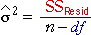

Standard deviation of the 'error' in the model
In the earlier pages of this section, we have concentrated on the parameters describing explained variation in a normal model for experimental data. For example, in the model for a categorical factor, we have estimated the parameters {µi} and used analysis of variance to test whether these parameters are all equal.
| yij = µi + εij for i = 1 to g and j = 1 to ni |
| |
where εij ∼ normal (0, σ) |
The model however also contains a parameter σ which is the standard deviation of the model errors, {εij}, and describes the amount of unexplained variation in the model. The parameter σ is the standard deviation of the error — it is also the standard deviation of replicate observations at the same factor level. From it, we can say that:
About 95% of replicate observations at the same factor level will be within ±2σ of the mean response at that level.
Cement packing machines
A cement manufacturing company packs cement into '50 lb' bags using several packing machines. Twenty bags produced by each of 3 machines were weight.
The diagram below shows the actual weight (lb) of each of the 60 bags and a possible normal model for the data. (The three normal distributions are centred on the sample mean weights of the 20 bags from the three machines.)
Use the slider to adjust the value of σ.
Click Best estimate to display the best-fitting model.
(A brief explanation of the source of this estimate is given in the next
page.)
Estimate of error variance
For technical reasons, when analysing experimental data, it is better to
focus on variances rather than standard deviations, so we will consider estimation
of σ2
rather than σ.
The error variance, σ2,
is estimated by the mean residual sum of squares for the model being fitted.

if there are n observations and the explained part of the model has df parameters.
Cement packing machines
The analysis of variance (anova) table for the cement-packing data is shown below.
| Source of variation |
SSq |
df |
MSq |
F |
p-value |
 |
| Machines |
31.65 |
2 |
15.826 |
59.51 |
0.000 |
| Residual |
15.16 |
57 |
0.266 |
|
|
|
| Total |
46.81 |
59 |
|
|
|
From the p-value associated with the factor (the difference between the machines), we conclude that there is almost certainly a difference between the mean back weights for the different packing machines.
The row of the table that is highlighted in red shows the residual sum
of squares, its degrees of freedom, and the best estimate of the error variance,
σ2, is 0.266.
From this, we can say that:
About 95% of bags produced by a packing machine will have weights within 2σ = 1.03 pounds of the mean bag weight for that machine.